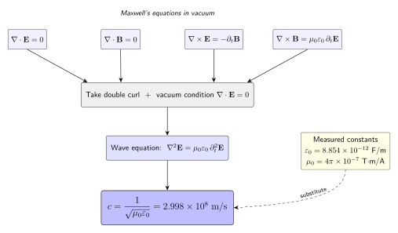

光速为什么恰好是每秒 299,792,458 米?
上一节的结尾, 傅科的旋转镜测出 $c\approx 2.98\times 10^8$ m/s, 误差已降到千分之一量级. 一个自然的问题接着浮出来: 这个速度是一个自然常数, 还是某个更深方程组的副产品? 如果它只是某种粒子的飞行速度, 那么它就像雨滴的下落速度一样, 原则上可以是任何值; 但如果它是某个场的结构决定的, 那就意味着光的本体就写在那个场的方程里.
1865 年, 詹姆斯·克拉克·麦克斯韦在《电磁场的动力学理论》这篇论文里给出了答案. 他把 Faraday 的电磁感应、Ampère 的电流磁效应、以及 Gauss 的电通量与磁通量守恒并到一起, 再在安培定律右侧加上一项"位移电流"——这个修正看起来只是为了让电荷守恒自洽, 却让四个方程从此具备了产生自持传播波动的能力. 取二次旋度以后, 电场服从波动方程, 波速 $1/\sqrt{\mu_0\varepsilon_0}$ 恰好等于当时光学家们测到的 $c$. 麦克斯韦写下一句近乎克制的话: 这个巧合几乎无法避免让我们推论, 光本身就是电磁扰动的横向波. 本节就是要把这条推论一步一步走完.
一、四个方程: 真空里的麦克斯韦
我们从真空中的麦克斯韦方程组写起. 真空意味着电荷密度 $\rho=0$ 且传导电流密度 $\mathbf{J}=0$, 这样四个方程长成最干净的对称样子:
$$\nabla\cdot\mathbf{E}=0, \qquad \nabla\cdot\mathbf{B}=0,$$
$$\nabla\times\mathbf{E}=-\frac{\partial\mathbf{B}}{\partial t}, \qquad \nabla\times\mathbf{B}=\mu_0\varepsilon_0\frac{\partial\mathbf{E}}{\partial t}. \tag{1}$$
前两条说电场线与磁场线都没有自由源头——电荷的贡献被设为零, 磁单极子不存在. 第三条是 Faraday 定律: 磁通量随时间变化会在周围感生出涡旋电场. 第四条是 Ampère-Maxwell 定律: 电通量随时间变化会感生出涡旋磁场, 这里 $\mu_0\varepsilon_0\,\partial_t\mathbf{E}$ 就是麦克斯韦在 1861-1865 年分几步加进来的位移电流项.
为什么一定要加位移电流? 原始的安培定律 $\nabla\times\mathbf{B}=\mu_0\mathbf{J}$ 对时变场不自洽: 对两边取散度, 左边是 $\nabla\cdot(\nabla\times\mathbf{B})=0$, 右边是 $\mu_0\nabla\cdot\mathbf{J}$, 在电荷守恒 $\partial_t\rho+\nabla\cdot\mathbf{J}=0$ 下不恒为零. 麦克斯韦想到: 把 $\partial_t\mathbf{E}$ 这一项加进去, 利用 $\nabla\cdot\mathbf{E}=\rho/\varepsilon_0$, 右边就变成 $\mu_0\mathbf{J}+\mu_0\varepsilon_0\partial_t\mathbf{E}$, 它的散度恰好为零. 换句话说, 位移电流是让整个方程组对时间演化的自洽条件. 但它带来的副作用远远超出逻辑补丁: 有了它, 真空中即便没有任何电荷或电流, 变化的 $\mathbf{E}$ 与变化的 $\mathbf{B}$ 也能互相激发, 形成自持的波动.
这四个方程的关键对称性在后面两行. Faraday 方程让 $\partial_t\mathbf{B}$ 由 $\nabla\times\mathbf{E}$ 给出, Ampère-Maxwell 方程让 $\partial_t\mathbf{E}$ 由 $\nabla\times\mathbf{B}$ 给出. 这是一对典型的耦合演化: $\mathbf{E}$ 的变化激发 $\mathbf{B}$, $\mathbf{B}$ 的变化又回头激发 $\mathbf{E}$. 只要合理消去其中一个场, 就能看到另一个场遵循的独立方程——那个方程会是波动方程.
二、二次旋度: 挤出一个波动方程
我们想知道 $\mathbf{E}$ 单独满足什么方程. 对 Faraday 方程两边取旋度:
$$\nabla\times(\nabla\times\mathbf{E})=-\frac{\partial}{\partial t}(\nabla\times\mathbf{B}) =-\mu_0\varepsilon_0\,\frac{\partial^2\mathbf{E}}{\partial t^2},$$
第二个等号用的就是 Ampère-Maxwell 方程把 $\nabla\times\mathbf{B}$ 换掉. 现在左边需要一个矢量恒等式:
$$\nabla\times(\nabla\times\mathbf{E})=\nabla(\nabla\cdot\mathbf{E})-\nabla^2\mathbf{E}=-\nabla^2\mathbf{E},$$
最后一步用的是真空条件 $\nabla\cdot\mathbf{E}=0$. 把两式合起来, 负号对消后就得到标准的矢量波动方程:
$$\nabla^2\mathbf{E}=\mu_0\varepsilon_0\,\frac{\partial^2\mathbf{E}}{\partial t^2}. \tag{2}$$
对 $\mathbf{B}$ 作同样的操作可以得到完全平行的 $\nabla^2\mathbf{B}=\mu_0\varepsilon_0\,\partial_t^2\mathbf{B}$, 结构完全相同, 系数完全相同, 因此 $\mathbf{E}$ 和 $\mathbf{B}$ 必然以同一个速度传播.
方程 (2) 是所有物理学家熟悉的那种波动方程: 一般形式为 $\nabla^2\psi=\frac{1}{v^2}\partial_t^2\psi$, 其中 $v$ 是波速. 对照系数, 我们立即读出
$$c=\frac{1}{\sqrt{\mu_0\varepsilon_0}}. \tag{3}$$
这是本篇最关键的一个公式. 它的惊人之处在于: $\varepsilon_0$ 和 $\mu_0$ 原本是电学和磁学里两个看起来毫无关系的常数—— $\varepsilon_0$ 出现在两个静电荷的库仑定律里, 描述电场在真空中多"稀", $\mu_0$ 出现在两条静电流的安培力定律里, 描述磁场在真空中多"稠". 它们都是通过用弹簧秤称电荷或用扭秤称载流导线这种静态实验测出来的, 跟光速毫无干系. 但是, 麦克斯韦方程组告诉我们: 这两个静态量的乘积决定了光的速度.

三、代入真实数字: 299,792,458 从哪里冒出来
光的速度被"定"在 $c=299{,}792{,}458$ m/s. 我们来验证: 仅从两个静态电磁常数, 能不能得到这个数.
真空磁导率在 2019 年国际单位制修订之前被定义为 $\mu_0=4\pi\times 10^{-7}$ T·m/A, 精确地是 $1.2566370614\ldots\times 10^{-6}$ H/m, 这是当年用一对载流平行导线之间的力除以电流平方得到的. 真空电容率通过电容器——两块平行板充电, 测其电容, 再与几何尺寸对比——给出 $\varepsilon_0\approx 8.8541878128\times 10^{-12}$ F/m. 把它们相乘:
$$\mu_0\varepsilon_0\approx (1.2566\times 10^{-6})\times(8.8542\times 10^{-12})\approx 1.1127\times 10^{-17}\ \mathrm{s^2/m^2}.$$
开平方再取倒数:
$$c=\frac{1}{\sqrt{\mu_0\varepsilon_0}}\approx \frac{1}{\sqrt{1.1127\times 10^{-17}}}\approx 2.998\times 10^8\ \mathrm{m/s}.$$
这个数字与傅科在 1862 年用旋转镜测得的 $c\approx 2.98\times 10^8$ m/s、Michelson 在 1879 年的 $c\approx 2.9991\times 10^8$ m/s 都在误差范围内完全对上. 麦克斯韦在 1865 年拿到的 $\varepsilon_0, \mu_0$ 的数值精度已经足以让他算出 $\approx 3.11\times 10^8$ m/s, 与当时光速测量的 $\approx 3.14\times 10^8$ m/s 相差仅约 1%. 这并不是一种可以侥幸归于巧合的相合, 它是两条完全独立的实验路径——一条是电磁学实验室里的电容与电流, 另一条是天文台和实验室里的齿轮、旋转镜——被一组方程在纸上连在了一起.
这里我们要特别注意一下方法论. 公式 (3) 里的 $\mu_0$ 与 $\varepsilon_0$ 一开始是经验常数, 但由于 1983 年的国际单位制改革, 米被重新定义为"光在真空中 $1/299{,}792{,}458$ 秒内走过的距离", 从此 $c$ 成了一个准确的定义值, 而 $\mu_0\varepsilon_0$ 的乘积也就被反向锁死为 $1/c^2$. 测量的主被动关系从此翻转: 不再是用距离和时间测光速, 而是用光速和时间定义距离.
四、位移电流、赫兹的实验与历史连接
为什么位移电流的数学修正会带来真实的物理后果? 把 $\partial_t\mathbf{E}$ 当作一种"电通量变化产生磁场"的效应, 它就和 Faraday 的"磁通量变化产生电场"完美对偶: 电磁不再是两种分立的力, 而是一个整体场在时间里的两面. 在真空区域里, 一团变化的电场会感生出变化的磁场, 这个变化的磁场又会感生出远一点地方的变化电场, 以此接力向外传播. 传播速度正是 $c=1/\sqrt{\mu_0\varepsilon_0}$.
有了方程, 物理人接下来问的是: 这种自持的波真的存在吗? 在麦克斯韦 1865 年论文发表的二十多年之后, 海因里希·赫兹 (Heinrich Hertz) 在 1887-1888 年的卡尔斯鲁厄做出了第一代电磁波发生器和接收器: 他用一个火花隙震荡电路作为发射源, 远处放一个带小火花间隙的接收环. 发射端放电时, 远端也迸出微弱火花, 证明一种不可见的扰动跨过空气传了过去. 赫兹进一步测量了这种扰动的波长和频率, 二者相乘得到的速度, 和光学家们测得的 $c$ 相符到两位有效数字以内. 电磁波的确以光速传播. 更巧的是, 赫兹测到这种波可以被金属屏反射, 可以被介质棱镜折射, 可以被电栅极化——全部都是光学教科书上熟悉的性质. 到这里, 电动力学与光学从此合为一门学问.
我们也应当做一次极限检验. 方程 (2) 是真空方程. 如果把场放进一块普通的透明介质里, 四条方程的材料响应项要被打开, 变成 $\nabla\cdot\mathbf{D}=0$、$\nabla\times\mathbf{H}=\partial_t\mathbf{D}$, 其中 $\mathbf{D}=\varepsilon\mathbf{E}$、$\mathbf{B}=\mu\mathbf{H}$. 重复取二次旋度的过程, 波速变成 $v=1/\sqrt{\mu\varepsilon}$. 大多数透明介质都是非磁性的, $\mu\approx\mu_0$, 于是
$$v=\frac{c}{\sqrt{\varepsilon_r}}=\frac{c}{n},$$
这正是折射率 $n$ 的微观来源. 水的相对介电常数 $\varepsilon_r\approx 1.77$ (可见光频段), 所以 $n\approx 1.33$, 光在水里慢到约 $2.25\times 10^8$ m/s. 这一极限不仅自洽, 还把光学课上的斯涅尔定律接回到了电动力学的母体. 反过来, 若取 $\omega\to 0$ 即静极限, 麦克斯韦方程退化为静电和静磁, 没有"波"这一模式, 但方程依旧成立——光只是在 $\omega\ne 0$ 时方程所允许的一族解.
最后值得一提的还有相对论的那一层含义. 公式 (3) 里没有速度的参考系信息: $\mu_0$ 和 $\varepsilon_0$ 是真空的固有属性, 按麦克斯韦的方程组, 任何惯性参考系里看到的真空都应该有同一组 $\mu_0\varepsilon_0$, 因此都应该测到同一个 $c$. 这个性质和经典力学的速度相加法则相冲突, 正是这一冲突驱使爱因斯坦在 1905 年把"真空中光速对一切惯性观察者不变"确立为狭义相对论的基本 postulate. 从麦克斯韦到爱因斯坦, 中间的四十年让 $c$ 从一个电磁学里算出来的数, 变成了时空结构本身的标尺.
小结
光是什么? 到本节为止答案终于有了硬质地: 光是真空麦克斯韦方程组的自持横波解, 速度被两个静态电磁常数的乘积完全决定, 没有任何自由参数. "$299{,}792{,}458$ 米每秒"不是一个从天上掉下来的数字, 它在电容器、载流导线、平行板的静态实验里早就以 $\varepsilon_0, \mu_0$ 的面目藏好了——麦克斯韦把方程组写完整之后, 它就自动掉到波速上. 再往后, 1887 年赫兹用火花隙把电磁波从纸面请进了实验室, 1983 年 SI 把 $c$ 直接定义为一个准确的数, 光速从被测量的对象变成了度量本身的基准. 下一节我们要问一个更细的问题: 波包里同一个 $c$ 其实藏着两种速度——相速度与群速度——它们什么时候重合, 什么时候分家?
▲